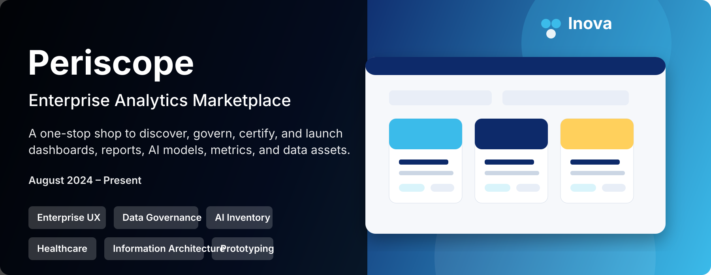
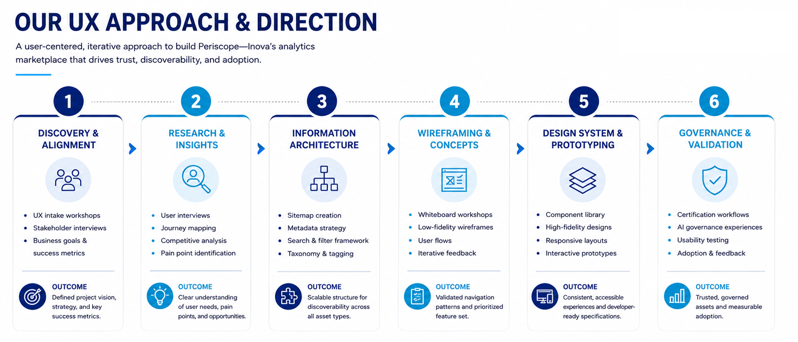

Periscope — Enterprise Analytics Marketplace
A centralized discovery platform for dashboards, reports, AI models, and data assets across a large health system.

Project Overview
One place to find everything analytics
Before Periscope, clinical leaders, operations managers, and analytics developers navigated a maze of disconnected platforms — Power BI, Tableau, Epic, SharePoint, internal apps — just to find a single report. Assets were buried in personal folders, ownership was unclear, and trust in the data was low.
Periscope was designed as an Amazon-like discovery experience for analytics: a governed, searchable, metadata-rich marketplace where any user could find, preview, trust, and launch the right asset in minutes.
Discovery was broken
Reports were hidden across teams, personal folders, and platforms. Search didn't span systems. Ownership was invisible. Duplicate assets multiplied. Users either gave up or spent hours hunting down the right dashboard.
A governed marketplace
A single, searchable platform combining powerful search, advanced filters, metadata-driven asset cards, certification status, favorites, campaign groupings, clinical care pathways, AI model inventory, and governance workflows — all in one cohesive experience.
My Role
Senior UX/UI Designer — end to end
I led UX from intake through high-fidelity delivery, working closely with analytics, governance, architecture, and clinical stakeholders across four design sprints.
Contributions
UX intake, discovery workshops, information architecture, wireframing, design system alignment, high-fidelity UI, governance workflow design, and stakeholder review facilitation.
- Captured business goals and user needs through structured UX intake
- Mapped platform structure and navigation hierarchy
- Facilitated low-fidelity design sessions with stakeholders
- Designed high-fidelity screens for all six primary experiences
- Built governance certification workflows for assets, AI, and metrics
- Aligned every design decision to Inova's enterprise design system

Users & Opportunities
Who we designed for
I defined four lightweight personas to focus the team on real frustrations and opportunities — keeping discovery grounded in user context rather than assumptions.
Clinical Leader
Needs: Certified dashboards for quality metrics and care initiatives.
Opportunity: Surface trusted assets faster with clear governance signals.
Analytics Developer
Needs: Publish reports, reduce duplicate builds, increase adoption.
Opportunity: Visibility into asset ownership and reuse patterns.
Operational Manager
Needs: Monitor performance KPIs without navigating multiple tools.
Opportunity: Organize assets by role, goal, and initiative.
Governance Admin
Needs: Certify assets, govern metrics, review AI products at scale.
Opportunity: Centralize all governance workflows in one place.
Discovery & Research
Before screens, we learned the landscape
We ran UX workshops, stakeholder interviews, competitive analysis, existing catalog audits, and user flow mapping before sketching a single screen. The goal was to understand what users needed most — and what governance actually required.
Research Activities
UX intake sessions, stakeholder interviews, analytics workshops, current-state inventory reviews, competitive analysis, and end-to-end user flow mapping.
Systems Reviewed
Epic analytics catalog, Tableau Server, Power BI workspaces, SharePoint sites, shared network folders, existing AI model inventory, and internal documentation sources.
Phase 1 Prioritization Criteria
User demand frequency, business impact, governance value, technical feasibility, and potential to reduce duplicate asset creation.

Key Insights
What we learned from research
Six recurring themes shaped every major design decision in Phase 1.
Search was the primary need
Users typically knew what they wanted — they just didn't know where it lived. Cross-system search was the single most requested capability.
Trust signals mattered before launch
Users wanted to see ownership, certification status, and metadata before opening a report. Discovery without trust caused hesitation.
Preview before commit
Screenshots, descriptions, and context reduced tool-switching and gave users confidence before navigating to source platforms.
Initiative-based thinking
Teams think in terms of organizational goals — Leapfrog, Cost Reduction, Quality Improvement — not tool names or folder structures.
Governance can't add friction
Governance needed to build trust for end users without slowing them down. Admin workflows had to stay separate from the discovery experience.
Role-based discovery was an opportunity
Users wanted personalized signals — "popular with my role," favorites, and recommendations — not a generic list of everything.
Feature Prioritization
What made it into Phase 1 — and why
We prioritized based on user demand, governance value, and feasibility. Personalization and AI recommendations were deliberately deferred to avoid scope creep on core discovery.
Phase 1 Scope
Global search, browse all assets, advanced filters, asset detail pages, favorites, campaign groupings, Inova Care pathways, AI inventory, KPI dashboard, and certification governance workflows.
Future Opportunities
AI-powered recommendations, personalized homepage, smart search ranking, usage analytics dashboards, role-based popularity signals, and user wishlists.
Process
Iterative design through recurring working sessions
Work was structured like sprint planning: recurring sessions with analytics, governance, architecture, and clinical stakeholders. Each session included design review, prioritization, and iteration — balancing business goals with user needs, governance requirements, and technical constraints.
Search & Discovery
Global search, autocomplete, query execution, and result layout.
Browse & Filters
Asset grid, card design, category filters, and tag-based refinement.
Campaigns & Favorites
Initiative groupings, Inova Care pathways, and saved asset collections.
AI & Governance
AI model inventory, certification workflows, and admin tooling.
Information Architecture
Mapping the platform before designing screens
A site map aligned stakeholders on how users would move from login to dashboard, search results, AI inventory, favorites, campaigns, and asset detail pages — establishing a shared mental model before any visual design began.

Early Exploration
Low-fidelity wireframes
Wireframes let us validate navigation structure, search layout, asset organization, detail pages, and favorites flows quickly — before any visual design investment. Click to expand.

Homepage Concept
Marketplace home structure with featured, popular, and role-based sections.

Inventory Exploration
Grid-based asset discovery with sidebar filter exploration.

Search Results
Result layout with filter refinement and query context.

Asset Detail Page
Preview-before-launch with ownership, certification, and actions.
Design System
Built on Inova's enterprise foundation
I extended Inova's enterprise design system — typography, color, buttons, cards, dropdowns, and iconography — ensuring Periscope felt native to the broader product ecosystem while introducing marketplace-specific patterns.

Foundations
Color, type, iconography.

Buttons
Primary action patterns.

Dropdowns
Selection patterns.

Cards
Asset tile patterns.
Final Designs
High-fidelity marketplace experience
The final product combined search, browse, filters, asset cards, favorites, campaign groupings, clinical care pathways, AI inventory, and detail pages into a cohesive, governed discovery experience. Click any screen to expand.

Home Dashboard
Featured content, popular assets, and initiative-based discovery.

Expanded Navigation
Category links, quick filters, and guided discovery pathways.

Browse All Assets
Marketplace grid with certification, tags, and quick actions.

Filtered Results
Refined discovery by type, owner, certification, and tag.

Search Entry
Search-first discovery with autocomplete suggestions.

Search Results
Relevant results surfaced with certification and metadata context.

Favorites
Saved assets, recent items, and personal collections.

Campaigns
Strategic initiative groupings for goal-aligned discovery.

Inova Care
Predefined clinical care pathway groupings.

Asset Details
Full metadata, preview, certification status, and launch actions.

Discussion Tab
Peer ratings, reviews, and comments within asset details.

AI Model Browser
Discover AI products, model cards, vendors, and deployment status.

AI Discussion
Stakeholder comments and feedback on AI model performance.
Organizing Assets
Campaigns and Inova Care pathways
Two distinct organizing systems serve different discovery needs — strategic initiative groupings for operational use cases and predefined clinical pathways for care-aligned decisions.
Campaigns
Represent high-level organizational initiatives used to group related analytics assets across the enterprise. Examples include Leapfrog, Cost Reduction, Quality Improvement, and Patient Experience — allowing users to discover assets through the lens of business goals.
Inova Care
Clinical care pathways aligned with established programs. Unlike Campaigns, these are predefined and governed clinically. Examples include Sepsis Management, Stroke Care, Heart Failure, and Cancer Care — supporting evidence-based care delivery.
AI Inventory
Making AI visible, trusted, and governed
The AI Inventory experience surfaced model cards with deployment status, vendor, intended audience, known limitations, monitoring links, performance oversight, and certification state — giving the organization a single pane of glass for AI governance.

Performance: On Track
Model meets minimum performance thresholds for continued use.

Performance: Partial
Model partially meets requirements and has an active remediation plan.

Performance: Critical
Significant performance issues flagged for immediate governance review.
Governance & Certification
Turning discovery into an enterprise-trusted platform
As Periscope expanded beyond search, I designed governance workflows enabling admins to certify assets, manage remediation, govern tags, review campaigns, and oversee AI product approval — without exposing those workflows to end users browsing the marketplace.

Asset Certification
Review and certify dashboards and reports.

AI Certification
Structured review and approval of AI models.

Metrics Certification
Govern enterprise KPI definitions and trust standards.

Campaign Management
Review and manage strategic initiative groupings.

Campaign Creation
Link assets to organizational initiatives.

Tag Governance
Standardize metadata across the marketplace.
Certification Status Framework
Six states, one source of truth
Each asset in the marketplace carries one of six governance states — visible to users before they open anything.
Certified
Trusted and approved for enterprise use.
In Review
Currently undergoing governance review.
Remediation Required
Updates needed before approval.
Not Eligible
Does not meet governance criteria.
Deprecated
No longer recommended for use.
Flagged
Requires review or justification.
Outcomes
A scalable foundation for analytics discovery and AI governance
Periscope moved the organization from fragmented, folder-based report hunting to a governed, searchable, trust-aware marketplace — with a foundation designed to grow with AI adoption.
Periscope demonstrated how UX can transform data governance from a back-office administrative function into a discoverable, transparent, and user-centered enterprise product. Users could find governed, certified assets quickly — increasing confidence in analytics resources and supporting more informed decision-making across the health system.
Next Steps
What comes after Phase 1
Upcoming work includes development handoff documentation, sprint support with engineering, moderated usability testing, A/B testing for search placement and card layout, UAT validation, and iterative feedback collection to refine the marketplace based on real usage.
Reflection
The hardest UX problem
This project combined enterprise UX, healthcare analytics, information architecture, AI governance, design systems, and data governance into one platform. The deepest challenge was not making assets easier to find — it was making users feel confident that what they found was trusted, governed, and appropriate for decision-making.